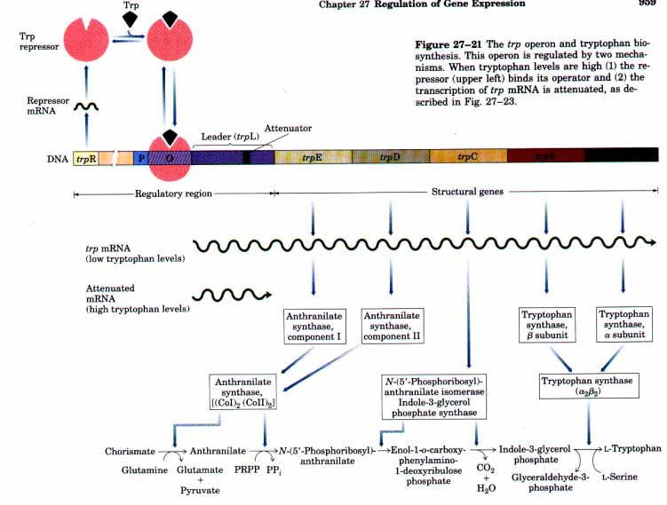
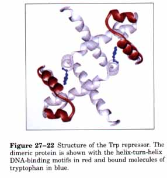
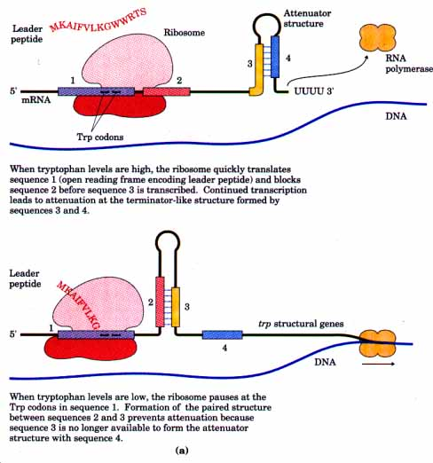
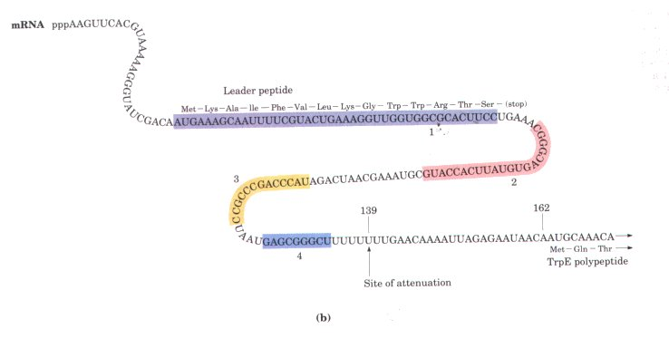
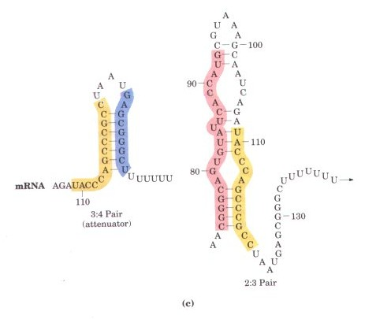
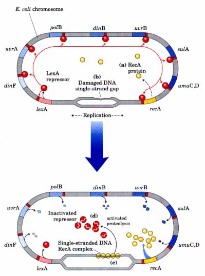

Amino acids are required in large amounts for protein synthesis, and E. coli has enzymes for synthesizing all of them. Not surprisingly, the genes for the enzymes needed to synthesize a given amino acid are generally clustered in an operon. These enzymes are needed, and hence the operon corresponding to an amino acid is expressed, whenever existing supplies of the amino acid are inadequate for cellular requirements. When the amino acid is in abundant supply, the biosynthetic enzymes are no longer needed and the operon is repressed.

| A well-defined example is the E. coli tryptophan (trp)
operon, which includes five genes for the enzymes required to convert chorismate into
tryptophan (Fig. 27-21). The mRNA from the trp operon has a half life of only
about 3 min, allowing the cell to respond rapidly to changing needs for this amino acid.
The Trp repressor is a homodimer, with each subunit containing 107 amino acid residues
(Fig. 27-22). When tryptophan is abundant, it binds to the Trp repressor, causing a
conformational change that permits the repressor to bind its operator. The trp
operator site overlaps the promoter, and binding of the repressor blocks binding of RNA
polymerase. Here, as elsewhere, this simple "on/off " circuit mediated by a repressor is not the entire regulatory story. This system responds to dif ferent tryptophan concentrations by varying the rate of synthesis of the biosynthetic enzymes over a 700-fold range. Once repression is lifted and transcription begins, the rate of transcription is fine-tuned by a second regulatory process called transcription attenuation. |
 |
Transcription attenuation describes a process in which transcription is initiated normally but is abruptly halted before the operon genes are transcribed. The frequency with which transcription is attenuated depends on the available concentration of tryptophan. The basis for the mechanism, as worked out by Charles Yanofsky, is the very close coupling between transcription and translation in bacteria.
 |
Figure 27-23 (a) The attenuation mechanism in the trp operon involves four short sequences within a 162 nucleotide mRNA leader called trpL, preceding the trpE gene. Sequence 1 is a short open reading frame that encodes a small peptide called the leader peptide, translated immediately after transcription begins. Sequences 2 and 3 are complementary, as are sequences 3 and 4. The attenuator formed by sequences 3 and 4 has a structure and function similar to those of a transcription terminator (see Fig. 25-8). Note that the leader peptide itself has no other cellular function. l~anslation of its open reading frame has a purely regulatory function that determines which complementary sequences (2:3 or 3:4) are paired. (b) Sequence of the trp mRNA leader (trpL). (c) Pairing schemes for the interacting regions of the trp mRNA leader. |


When tryptophan levels are high, the ribosome quickly translates sequence 1 (open reading frame encoding leader peptide) and blocks sequence 2 before sequence 3 is transcribed. Continued transcription leads to attenuation at the terminator-like structure formed by sequences 3 and 4.
When tryptophan levels are low, the ribosome pauses at the Trp codons in sequence l. Formation of the paired structure between sequences 2 and 3 prevents attenuation because sequence 3 is no longer available to form the attenuator structure with sequence 4.
The trp operon attenuation mechanism uses signals encoded in four sequences within a 162 nucleotide leader region at the 5' end of the mRNA that precedes the initiation codon of the first gene (Fig. 27-23a, b). At the end of the leader is a sequence called the attenuator, made up of sequences 3 and 4. Sequences 3 and 4 base-pair to form a G=Crich stem and loop structure followed by a series of uridylate residues, a structure that resembles a transcription terminator (Fig. 27-23c); transcription will halt here when this structure forms. Formation of the attenuator stem and loop depends on events occurring during the translation of a short open reading frame in the leader RNA that encodes a peptide of 14 amino acids (called the leader peptide because it is encoded within the leader region of the mRNA). This short gene is another of the four regulatory sequences (sequence 1 in Fig. 27-23a, b). Translation of the leader peptide begins immediately after it is transcribed, and the bound ribosome follows closely behind the RNA polymerase as transcription proceeds. Regulatory sequence 2 occurs near the end of the short open reading frame, and sequences 3 and 4, as noted above, form the attenuator stem and loop. Sequerice 2 is an alternative complement for sequence 3. If sequences 2 and 3 base-pair, the attenuator structure derived from the interaction of sequences 3 and 4 cannot form and transcription continues into the trp biosynthetic genes (the loop formed by the pairing of sequences 2 and 3 does not obstruct transcription).
The short open reading frame (regulatory sequence 1 or leader peptide) is the key element in sensing tryptophan concentrations (Fig. 27-23). It can be thought of as a tryptophan-sensitive timing mechanism that determines whether sequence 3 pairs with sequence 4 (attenuating transcription) or with sequence 2 (allowing transcription to continue). This open reading frame includes two codons for tryptophan. When tryptophan concentrations are high, concentrations of charged tryptophan tRNA (Trp-tRNATrp) are also high. Translation will follow closely on the heels of transcription, proceeding rapidly past the Trp codons and into sequence 2 before sequence 3 is synthesized by RNA polymerase. In this case sequence 2 is covered by the ribosome and thus is rendered unavailable for pairing to sequence 3 when it is synthesized; the attenuator structure (sequences 3 and 4) is formed and transcription is halted. When tryptophan concentrations are low, however, the ribosome stalls at the two Trp codons because charged tRNATrp is unavailable. Sequence 2 remains free as sequence 3 is synthesized, these two sequences can base-pair, and transcription can proceed (Fig. 27-23). In this way, the proportion of transcripts that are attenuated increases as tryptophan concentrations increase.
Each amino acid biosynthetic operon uses a similar attenuation strategy to fme-tune biosynthetic enzymes to meet cellular requirements. The 15 amino acid leader peptide produced by the phe operon contains seven Phe residues. The leader peptide for the his operon contains seven contiguous His residues. The leu operon leader peptide has four contiguous Leu residues. In fact, in most amino acid biosynthetic operons (trp excepted), attenuation is sufficiently sensitive to be the only regulatory mechanism.
| The SOS response (p. 838) is a good example of the coordinate regulation
of many unlinked genes. The SOS genes are induced when the bacterial chromosome is
extensively damaged; many are involved in DNA repair and mutagenesis (see Table 24-6). The
key regulatory elements are a repressor, called the LexA repressor, and the RecA protein
(Chapter 24). The LexA repressor regulates the transcription of all of the SOS genes (Fig. 27-24). Induction of the SOS response involves removal of the LexA repressor, but this is not a simple dissociation from DNA in response to binding a small molecule as in the examples described above. Instead, the LexA repressor is inactivated by autocleavage into two protein fragments. Cleavage occurs at a specific Ala-Gly peptide bond that splits the protein (Mr 22,700) into two roughly equal fragments. By itself, the LexA repressor only undergoes autocleavage at elevated pH. At neutral pH, the self digestion reaction requires RecA protein, and this RecA activity is sometimes called a coprotease activity. It is the RecA protein that provides the link between the biological signal (DNA damage) and SOS induction. RecA protein facilitates cleavage of the LexA repressor only when RecA is bound to singlestranded DNA (see Fig. 24-31). Heavy DNA damage leads to numerous single-strand gaps in the DNA, and these gaps provide the molecular signal that activates RecA protein, leading to cleavage of the LexA repressor protein and SOS induction. |
 Figure 27-24 The SOS response in E. coli. See Table 24-6 for a description of the functions of these genes. The LexA protein is the repressor in this system, with an operator site (indicated in red) near each gene. (a) The recA gene is not entirely repressed by the LexA repressor, and about 1,000 RecA protein monomers are normally found in the cell. (b) When DNA is extensively damaged (e.g., by UV light), DNA replication is halted and the number of single-strand gaps in the DNA increases. (c) RecA protein binds to this single-stranded DNA, activating the protein's coprotease activity. (d) While bound to DNA the RecA protein facilitates the cleavage and inactivation of the LexA repressor. When the repressor is inactivated, the SOS genes, including recA, are induced. RecA protein levels increase 50- to 100-fold . |
During induction of the SOS response, RecA protein also cleaves and thus inactivates the repressors that allow bacteriophage λ and related bacterial viruses to be propagated in a dormant (lysogenic) state within a bacterial host. These repressors have apparently evolved to mimic the LexA repressor, and they are also cleaved at a specific Ala-Gly peptide bond. This leads to replication of the virus and lysis of the cell to release the new virus particles, permitting the bacteriophage to make a hasty exit from a bacterial cell that is in distress, as described below.